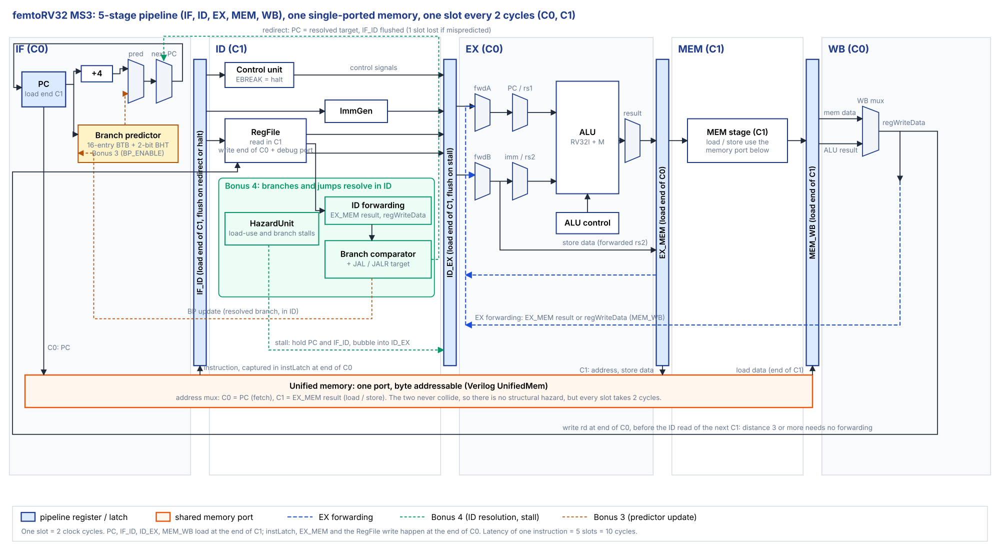
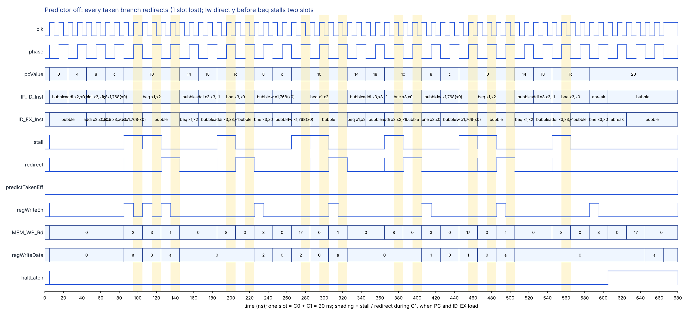
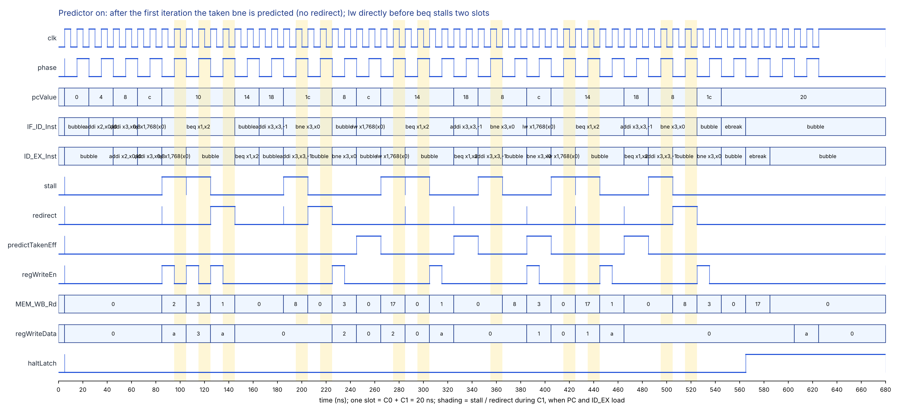

| Item | Status |
|---|---|
| ISA | All 42 RV32I instructions + 8 RV32M. EBREAK halts; ECALL, FENCE, FENCE.TSO, PAUSE are NOPs. |
| Pipeline | 5 stages, one 2-cycle slot each, single unified memory (C0 fetch, C1 data). |
| Bonuses claimed | Bonus 3 (2-bit BHT + BTB predictor) and Bonus 4 (branches and jumps resolved in ID with forwarding and stall). RV32M (Bonus 2) is implemented as an extra and not claimed. |
| Simulation | 160 / 160 directed checks; 48-instruction single-cycle test; unit tests; 4 assembly programs x 2 predictor settings; mutation test (Section 5.1). |
| Synthesis | Board top elaborates; Yosys reports no structural problems. Vivado bitstream not yet built. |
| FPGA | Wrapper, clocking, display and constraints written; board run and photos still to be added (Section 7). |
The project description allows one memory with one port. Fetch (IF) and data access (MEM) both need it, so they cannot happen in the same cycle. A phase controller toggles every clock: in C0 the memory serves the fetch, in C1 it serves the load or store of the MEM stage. The structural hazard therefore cannot occur, and the price is a stall every second cycle: the pipeline advances one stage per 2-cycle slot.
| Stage | Work | Register at the stage boundary |
|---|---|---|
| IF | PC, predictor lookup, memory read at PC in C0 | instLatch (end of C0), IF_ID (end of C1) |
| ID | decode, register read, immediate; Bonus 4: branch / jump resolved here with ID forwarding | ID_EX (end of C1) |
| EX | forwarding muxes, ALU (RV32I + M), PC+4 / immediate results | EX_MEM (end of C0) |
| MEM | load / store at the EX_MEM address in C1 | MEM_WB (end of C1) |
| WB | register file write at the end of C0 | none |
The PC loads at the end of C1. The register file is written at the end of C0 and read in C1, so an instruction three or more slots behind its producer reads the new value from the register file without forwarding.

| Case (producer distance) | Handling | Stall slots |
|---|---|---|
| ALU to ALU / store, distance 1 | forward EX_MEM result to EX | 0 |
| ALU to ALU / store, distance 2 | forward MEM_WB (regWriteData) to EX | 0 |
| Load to ALU / store, distance 1 | load-use stall, then forward from MEM_WB | 1 |
| Distance 3 or more | register file (written end of C0, read in C1) | 0 |
| Write to x0 | never forwarded (x0 guard in ForwardingUnit) | 0 |
| Term | Plain meaning |
|---|---|
| forwardA / forwardB | 2'b10 selects EX_MEM.result, 2'b01 selects regWriteData, instead of the ID_EX register value. |
| regWriteData | MEM_WB load data or ALU / PC+4 / immediate result, chosen by WbFromMem. |
| loadUseStall | HazardUnit: a load in EX whose rd matches a source of the instruction in ID. PC and IF_ID hold, a bubble enters ID_EX. |
Branches and jumps are resolved in ID (Bonus 4): a second comparator and target adder sit in ID, fed by ID forwarding. The fetch behind a taken branch is wrong unless the predictor guessed it, so a wrong next PC flushes IF_ID and costs 1 slot (2 cycles). The Bonus 3 predictor removes that penalty on learned branches.
| Case | Handling | Penalty |
|---|---|---|
| Not taken, predicted not taken | none | 0 |
| Taken, predicted correctly (BTB hit, counter 2 or 3) | PC already follows the target | 0 |
| Wrong prediction | redirect: PC = resolved target, IF_ID flushed | 1 slot |
| ALU result needed by a branch / JALR, producer in EX | stall until the result sits in EX_MEM, then ID forwarding | 1 slot |
| Load result needed by a branch / JALR | stall until the load data is in MEM_WB | 2 slots |
| Wrong-path EBREAK | halt only when EBREAK is in ID and not stalled; redirect flushes it | 0 |
16-entry direct-mapped BTB (index PC[5:2], tag PC[31:6], target) plus a 2-bit saturating counter per entry. Lookup at the fetch PC in C0; a taken prediction loads the BTB target. Counters start at 01; a taken branch that misses the BTB allocates at 10. The update happens when the branch resolves in ID. Test 20 walks one branch through the states 10, 11, 11, 10, 01, 00, 00, 01, 10, 11, 11, 10, 11, so it reaches strongly not-taken, saturates, and returns to strongly taken; the log matches the expected state after every update.
During C1 the instruction ahead already has its ALU result in the EX_MEM latch, so it is forwarded to the comparator; a load ahead has not yet delivered its data and HazardUnit stalls the branch. The branch comparator and target adder add a path in ID, which lengthens the ID stage but needs no extra stage.
| Program | Predictor on | Predictor off |
|---|---|---|
| 40 straight-line instructions + EBREAK (Test 10) | 84 | 84 |
| bne loop, 21 instructions retired (Test 6) | 60 (2 mispredicts) | 66 (5 mispredicts) |
| jal loop with beq exit (Test 7) | 48 | 54 |
| Predicted loop, 40 retired (Test 18) | 86 | 104 |
| Predictor walk + nested loops (Test 20) | 428 (15 mispredicts) | 468 (35 mispredicts) |
| Stale-value hazard suite (Test 21, 42 stalls) | 600 | 644 |
| MS2 full program vs single-cycle (Test 11) | 240 | 240 |
| all_instr.s | 360 | 360 |
| hazards.s | 170 | 170 |
| predictor.s | 774 | 848 |
| nops_halt.s | 38 | 38 |
Cycles until EBREAK latches. The predictor gives no gain on all_instr.s, hazards.s and Test 11 because their branches execute once, so nothing is learned.
| Layer | What it checks | Result |
|---|---|---|
| unit_tb.v | PhaseController, UnifiedMem (all widths), BranchPredictor states and aliasing, ForwardingUnit, HazardUnit (14 cases), PipelineReg | all pass |
| datapath_tb.v | single-cycle reference: 40 RV32I + 8 RV32M, ECALL as NOP, EBREAK halt at byte 472 | all pass |
| pipeline_tb.v | 23 directed tests, BP-on and BP-off twins, regression against the single-cycle datapath, structural monitors (no write in C0, PC changes only at end of C1) | 160 / 160 |
| programs_tb.v + Testing/programs | 4 self-checking assembly programs (x31 = 0 failures, x30 = 0xC0DE), predictor on and off | 8 / 8 pass |
| Testing/mutation_test.py | 19 injected bugs in pipeline.v and HazardUnit.v | 16 detected, 3 equivalent |
EX forward rs1 from EX_MEM off DETECTED EX forward rs1 from MEM_WB off DETECTED EX forward rs2 from EX_MEM off DETECTED EX forward rs2 from MEM_WB off DETECTED ID forward rs1 from EX_MEM off DETECTED ID forward rs2 from EX_MEM off DETECTED ID forward rs1 from MEM_WB off SURVIVED (equivalent: the register file is written at the end of C0, before the C1 read) ID forward also forwards loads SURVIVED (equivalent: HazardUnit stalls first, so a load is never in EX_MEM when the branch resolves) no load-use stall DETECTED no branch stall DETECTED IF_ID not flushed on redirect DETECTED halt ignores stall SURVIVED (equivalent: EBREAK has no source registers, so it never stalls) JALR target bit 0 kept DETECTED RegFile writes at end of C1 DETECTED PC ignores stall DETECTED predictor updated with wrong PC DETECTED redirect compared with PC+4 DETECTED store data not forwarded DETECTED load data replaced by address DETECTED
| Program | Content |
|---|---|
| all_instr.s | one self-checked instance of every RV32I and RV32M operation, sub-word loads and stores, x0 write |
| hazards.s | add / lw directly before taken and not-taken branches, JALR from ALU and from a load, JAL link to branch, load-ALU-store chain, load to store data, x0 write before a branch |
| predictor.s | loop (taken 15 times then exit), alternating branch, nested loops 5 x 4, never-taken branch |
| nops_halt.s | ECALL, FENCE, FENCE.TSO, PAUSE inside a dependent chain; instruction after EBREAK must not run |


datapath_board_pipelined.v only instantiates the pipeline and adds clocking and display. The program is chosen with the PROGRAM_FILE parameter (a byte-per-line hex file loaded by $readmemh into UnifiedMem).
| Control | Pin | Function |
|---|---|---|
| CLK100MHZ | E3 | system clock for debounce, clock generator and display scan |
| BTNC | N17 | step: one press = one CPU clock cycle (runMode = 0) |
| SW15 | V10 | reset |
| SW6 / SW7 | U18 / R13 | runMode (free run), fastMode (about 3 MHz instead of about 12 Hz) |
| SW0-1 | J15, L16 | LED view: instruction low / high, control flags, pipeline flags |
| SW2-5 | M13, R15, R17, T18 | display view: 0 PC, 1 next PC, 2 instruction in ID, 3 ALU result, 4 memory address, 5 memory data, 6 write-back data, 7 store data, 15 x[regSel] |
| SW8-12 | T8, U8 (LVCMOS18), R16, T13, H6 | regSel: register shown when display view = 15 |
| AN0-7, CA-CG, DP | J17 J18 T9 J14 P14 T14 K2 U13; T10 R10 K16 K13 P15 T11 L18; H15 | 8-digit hex display; decimal points and LD15 light on halt |
The CPU clock is a registered signal produced in the 100 MHz domain (CpuClockGen.v), so it is glitch free; a clock-enable scheme would be the production choice.
| Issue | Fix |
|---|---|
| ECALL halted the CPU (since MS2); the spec allows only EBREAK | control_unit halts only on inst[31:20] = 0x001; every test program now ends with EBREAK; Test 23 checks the NOPs |
| Board wrapper was a 470-line copy of the pipeline and referenced a missing display driver | wrapper now instantiates pipeline; new 8-digit hex driver, debouncer and CPU clock generator; debug ports and a debug register read port |
| Tests existed only inside the Verilog testbench | four assembly programs, assembled with LLVM, run unchanged in simulation and on the board |
| Mutation harness reported every run as a hang ("changes" contains "hang") | explicit timeout sentinel; results re-run |
| Branch comparison in ID needed fresh operands | ID forwarding from EX_MEM, stall when the operand is a load or still in EX |
cd Verilog SRC=$(ls *.v | grep -v -e _tb -e datapath_board) iverilog -g2012 -Wall -s pipeline_tb -o /tmp/p.out pipeline_tb.v $SRC && vvp /tmp/p.out | tail -3 iverilog -g2012 -Wall -s unit_tb -o /tmp/u.out unit_tb.v $SRC && vvp /tmp/u.out iverilog -g2012 -Wall -s datapath_tb -o /tmp/d.out datapath_tb.v $SRC && vvp /tmp/d.out | tail -3 sh ../Testing/programs/run_all.sh # needs llvm-mc, ld.lld, llvm-objcopy python3 ../Design/render_pipeline_waveforms.py
| Topic | Key fact | Number |
|---|---|---|
| Issue rate | one instruction per 2-cycle slot (single memory port) | CPI = 2 (no hazards) |
| Latency | 5 stages x 2 cycles | 10 cycles |
| ALU data hazards | EX_MEM and MEM_WB forwarding | 0 stalls |
| Load-use | one bubble, then MEM_WB forwarding | 1 slot |
| Branch (Bonus 4) | resolved in ID, IF_ID flushed on a wrong next PC | 1 slot |
| Predictor (Bonus 3) | 2-bit counters, 16-entry BTB | Test 20: 15 vs 35 mispredicts |
| Verification | directed + programs + mutation | 160 / 160, 8 / 8 |